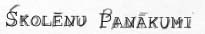

| vçsture | statistika | mâcîbas | darbinieki | absolventi | panâkumi | nodarbes | pasâkumi | saites | kontakti | |||||||||||||
|  | ||||
Skolas mâcîbu olimpiâdçs piedalîjâs 302 skolçni. | ||||
Rajona olimpiâdçs 1. vietu ieguva | ||||
skolçni |
klases |
mâcîbu priekðmets |
||
Jurìis Brûnais |
7.b |
vâcu valodâ |
||
Artis Krilovs |
10.c |
fizikâ |
||
Everita Berga |
10.c |
íîmijâ |
||
Sanda Blomkalna |
10.c |
matemâtikâ |
||
Laura Zariòa |
9.b |
vçsturç |
||
Mârcis Kaksis |
9.a |
informâtikâ |
||
Ulvis Lapetrovs |
10.b |
vizuâlajâ mâkslâ |
||
Republikas olimpiâdçs piedalîjâs 4 skolçni | ||||
skolçni |
klases |
mâcîbu priekðmets |
||
Ieva Puriòa |
12.c |
vâcu valodâ |
||
Ìirts Vitenbergs |
8.kl |
zçnu mâjturîbâ |
||
Ulvis Lapetrovs |
10.b |
vizuâlajâ mâkslâ |
||
Sanda Blomkalna |
10.c |
matemâtikâ |
||
Skolçnu piedalîðanâs republikas atklâtajâs mâcîbu olimpiâdçs
|
||||
Skolas zinâtniski pçtnieciskie lasîjumi 2003. gada 12. martâ | ||||
skolçni |
klases |
nosaukums |
||
Arta Vârpa |
7.a |
"Tçlnieka Kârïa Zemdegas pieminekïi Rûjienâ" |
||
Santa Bçrziòa |
7.b |
|||
Gunita Laursone |
7.b |
"Eiropas Savienîba kopâ, bet atðíirîgi" |
||
Anete Ugaine |
7.b |
|
||
Lauris Ziediòð |
10.c |
"Mûzikas ietekme uz pusaudþu emocionâlo paðizjûtu" |
||
Indra Krûzkope |
11.b |
"Saskarsmes procesa traucçjumi skolçnu un skolotâju attiecîbâs" |
||
Kârlis Treijs |
11.b |
|
||
Gatis Kampernovs |
10.c |
"Seðu Ziemeïvidzemes rajonu ekonomiski attîstîtâko pilsçtu ielu nosaukumu ìeogrâfija" |
||
Skolotâju un skolçnu piedalîðanâs projektos. | ||||
| Sportâ: | ||||
| Rajona sacensîbâs volejbolâ pamatskolu grupâ | 1. vieta | |||
| Vidzemes zonas sacensîbâs volejbolâ pamatskolu grupâ | 4. vieta | |||
| Rajona sacensîbâs basketbolâ 5.-9. klaðu grupâ | 2. vieta | |||
| Rajona sacensîbâs basketbolâ 6.-7. klaðu grupâ | 4. vieta | |||
| Rajona sacensîbâs basketbolâ vidusskolu grupâ | 3. vieta | |||
| Rajona sacensîbâs futbolâ '92. g. dzim. | 2. vieta | |||
| Rajona sacensîbâs futbolâ vidusskolu grupâ | 3. vieta | |||
| Rajona sacensîbâs "Vidusskolu kauss" viglatlçtikâ | 1. vieta | |||
| Vidzemes zonas sacensîbâs vieglatlçtikâ vidusskolu grupâ | 2. vieta | |||
| Rajona sacensîbâs viglatlçtikâ 5.-6. klaðu grupâ | 1. vieta | |||
| Rajona sacensîbâs veloorientçðanâs un orientçðanâs sportâ vidusskolu grupâ | 1. vieta | |||
| Rajona sacensîbâs dambretç vidusskolu grupâ | 1. vieta | |||
| Rajona sacensîbâs ðahâ vidusskolu grupâ | 2. vieta | |||
| Rajona dambretes turnîrâ 5.-7. klasçm | 2. vieta | |||
| Rajona dambretes sacensîbâs 4. klasçm | 3. vieta | |||
| Rajona dambretes sacensîbâs 3. klasçm | 3. vieta | |||
| Novada dambretes turnîrâ Valkâ | 3. vieta | |||
| Rajona 5.-7. klaðu turnîrâ ðahâ | 4. vieta | |||
| Skauti: | ||||
| ||||
| Konkursi: | ||||
| Rajona konkursâ "Do Re Mi" 7.-8. klaðu ansamblim | 3. vieta | |||
| Rajona konkursâ "Dejas brînums" 5.-8. klaðu ritmikas grupai | 3. vieta | |||
| Rajona konkursâ "Dejas brînums" 10.-12. klaðu ritmikas grupai | 2. vieta | |||
| Rajona lînijdeju konkursâ "Dejas brînums" lînijdeju pulciòam | 3. vieta | |||
| Rajona "popielâ" 9.b klases grupai | 1. vieta | |||
| Rajona "popielâ" 11.a klases grupai | 2. vieta | |||
| Rajona "popielâ" 8.ab klases grupai | 4. vieta | |||
| I. Kalniòa konkursâ "Jaunâs zvaigznes" tiesîbas piedalîties valsts konkursâ izcînîja I. Zûle (12. a), A. Miíelsone (11. a), L. Ðomase (9. a) | ||||
|
© Valmieras Viestura vidusskola 2003 | ||||